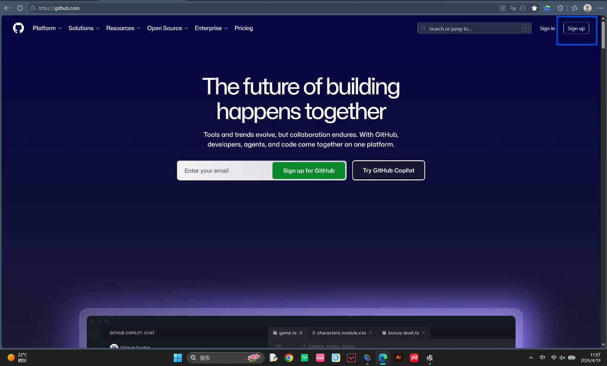
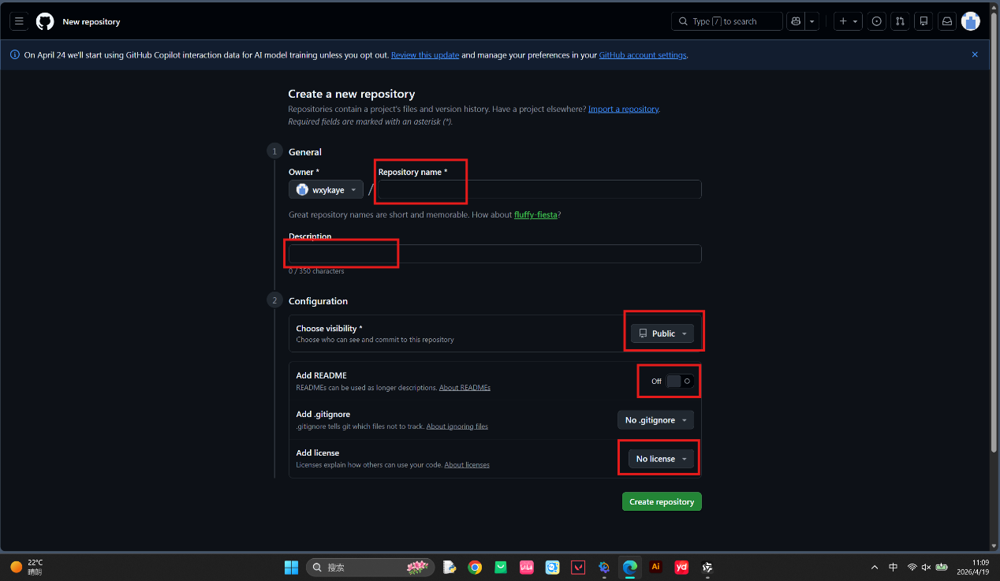
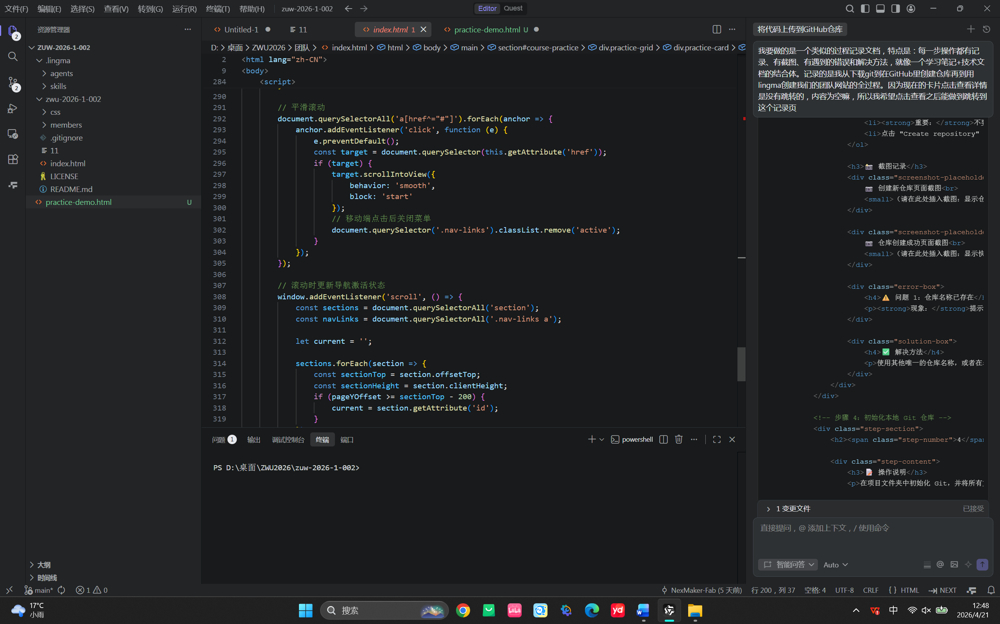

Practice Record: From Git Installation to Team Website Deployment
Step 1: Download and Install Git
Instructions
First, you need to download the installation package suitable for Windows system from the official Git website.
- Open your browser and visit the Git official website: https://git-scm.com/

- Click the "Download for Windows" button

- After downloading, double-click to run the installer
- Follow the wizard prompts to install (recommended to use default settings)
Step 2: Create Repository on GitHub
Instructions
- Visit https://github.com/ and register an account (if you don't have one yet)
- After logging in, click the "+" sign in the upper right corner and select "New repository"

- Fill in repository information:

- Repository name: Enter repository name (e.g., zwu-2026-1-002)
- Description: Optional, add repository description
- Public/Private: Choose public or private
- Important: Do NOT check "Initialize this repository with a README" (because we want to upload existing local code)
- Click "Create repository" button
Step 3: Initialize Local Git Repository and Commit Code
Instructions
Initialize Git in the project folder and commit all files to the local repository.
# Enter project directory
cd "d:\Desktop\ZWU2026\Team"
# Initialize Git repository
git init
# Create .gitignore file
echo ".lingma/" > .gitignore
# Add all files to staging area
git add .
# Commit changes
git commit -m "Initial commit: LifeTeam website"Step 4: Associate Remote Repository and Push Code
Instructions
Associate the local Git repository with the remote repository on GitHub, then push the code.
# Associate remote repository (replace with your repository address)
git remote add origin https://github.com/NexMaker-Fab/zwu-2026-1-002.git
# Push code to GitHub
git push -u origin main⚠️ Important Reminder
Avoid using the --force parameter! This will overwrite the remote repository's history and may cause others' work to be lost. Unless you are sure this is the correct operation.
Step 5: Enable GitHub Pages to Deploy Website
Instructions
- Visit your GitHub repository page
- Click the Settings tab at the top
- Find and click "Pages" in the left menu

- In the "Build and deployment" section:
- Source: Select "Deploy from a branch"
- Branch: Select "main"
- Folder: Select "/ (root)"
- Click Save button
- Wait 1-2 minutes, the website will be published
Access Your Website
After successful deployment, your website can be accessed via the following URL:

Step 6: Solve CSS Style Loading Issues
Problem Description
After uploading to GitHub Pages, the website's CSS styles did not load correctly, and the page displayed as pure HTML without any styling.
Problem: CSS File 404 Error
Symptom: Press F12 to open developer tools, and see style.css returning 404 error in the Network tab.
Cause: GitHub Pages URL includes a subpath (/zwu-2026-1-002/), while relative paths are used in HTML, causing the browser to fail to find the CSS file.
Solution
Add a <base> tag in the <head> section of all HTML files:
<head>
<meta charset="UTF-8">
<base href="/zwu-2026-1-002/">
<title>LifeTeam - Team Homepage</title>
<link rel="stylesheet" href="css/style.css">
</head>This way, all relative paths will automatically be based on the /zwu-2026-1-002/ base path.
Step 7: Use Lingma AI Assistant to Create Team Website
Instructions
Use Lingma AI programming assistant to quickly generate team website code.
- Describe Requirements: Tell Lingma that you want to create a team showcase website, including:
- Team introduction
- Team member showcase
- Final project showcase
- Course practice records

- Generate Code: Lingma will automatically generate HTML, CSS, and JavaScript code
- Save Files: Save the generated code to the project folder
- Test and Debug: Open index.html in local browser to view the effect
- Iterate and Optimize: Adjust content and style according to requirements
Usage Tips
- Describe your requirements in as much detail as possible, including features, styles, layouts, etc.
- You can ask Lingma to generate code for different parts step by step
- When encountering problems, send the error message directly to Lingma, and it will help you solve it. Remember to select "Agent" mode
- You can ask Lingma to help optimize code or add new features, including helping you upload the website to GitHub

Note: Remember to clone the repository in the terminal first before asking Lingma to upload.
Summary and Learnings
Completed Work
- ✅ Successfully installed and configured Git
- ✅ Created repository on GitHub
- ✅ Uploaded local code to GitHub
- ✅ Enabled GitHub Pages to deploy website
- ✅ Solved CSS path issues
- ✅ Used Lingma AI assistant to create team website
Knowledge Gained
- Basic Git operations: init, add, commit, push
- Creating and managing GitHub repositories
- Configuring and using GitHub Pages
- Troubleshooting and solving HTML/CSS path issues
- How to use AI assistants to improve development efficiency
Next Steps
- Continue to improve the content and functionality of the team website
- Explore back-end development and database knowledge